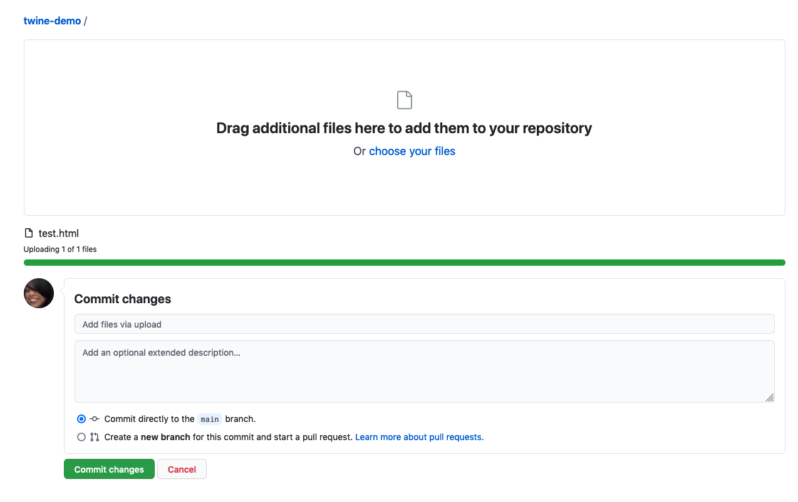

Getting Started
There are two ways to get started with Twine:
The online editor has the benefit that you don’t need to install anything to get started. Any files you create can be downloaded and later used with either the online editor or the local version of the software (if you choose to download in the future).
The local download gives you a bit of persistence for your project (eg. if you accidentally close a browser tab in the online version you could lose your work).
Where are files saved?
From the Twine documentation:
Online - “Stories are saved in the local storage of a web browser. This is isolated between a browser and its use of incognito or private windows. Clearing sessions and cookies in a browser may also clear the storage of Twine 2. Using a different browser also means accessing different local storage.”
Always save your work when using the Online editor, especially clearing your cache.
Desktop - “When used as a desktop application, Twine 2 stores its files under the current user’s files. The current collection of Stories can be accessed through the View -> Show Story Library menu option.”
This means that files are stored wherever you normally save your files (eg. Documents if that’s your default folder for files). Twine will create a new folder called “Twine” in that default location (eg. Documents) and you will be able to find saved .html files of your Twine stories in a sub-folder called “Stories”.
Adding content
For simplicity’s sake, use the Twine editor to add content. You are able to directly edit the generated .html file but unless you are comfortable editing HTML and Javascript, this can come with a steeper learning curve.
Publishing to the web through GitHub Pages
GitHub Pages is a way to publish static websites.
1 Go to GitHub.com and create a new repository. Make sure to “initialise with a Read.me”. Note that the name of the repository will eventually be a part of your story url.

2 Find your Twine file (your-story-name.html) and upload it to the new repository on GitHub 

3 In your GitHub repository go to “Settings” and then “Pages” in the left hand menu. From there select the “main” branch under “Source” and “Save” your change. It might take a few minutes for this to complete but eventually a url will appear on this page. This is the location of your new website.


4 Go to your twine story by entering the url of your new GitHub Pages site at “your-username.github.io/your-repository-name/your-twine-story-name.html”